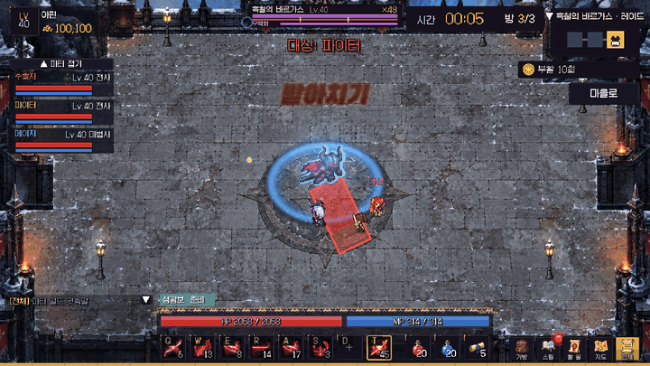
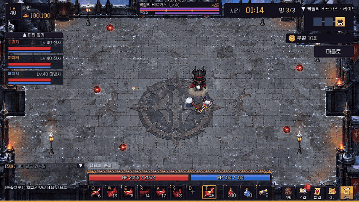
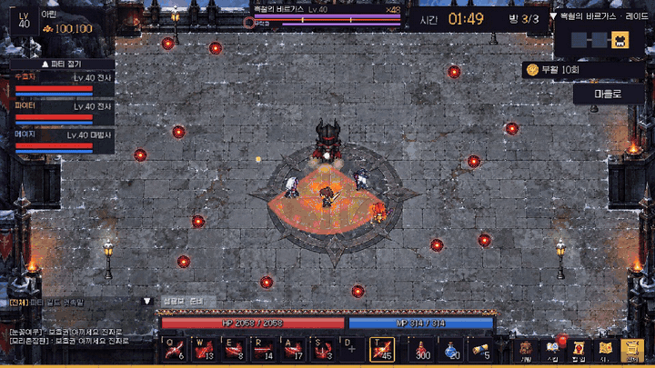
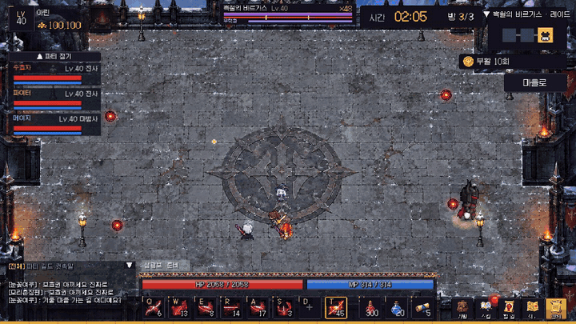
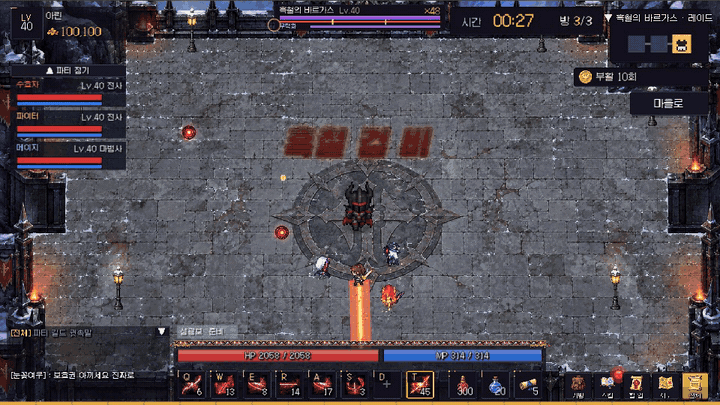
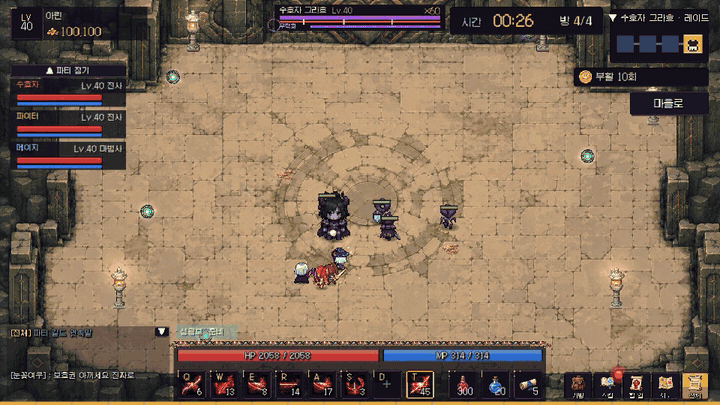
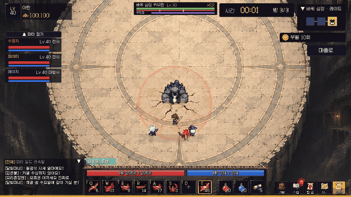
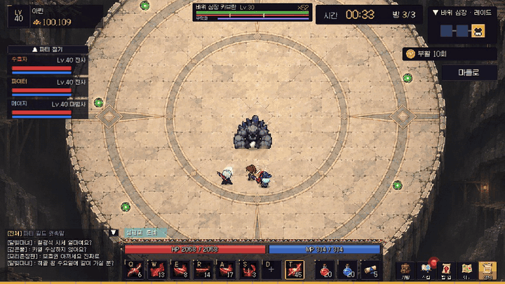

볼론 레이드 기믹
33개. 위 버튼으로 바로 이동합니다. GIF는 화면에 올 때 불러옵니다.
바르가스 - 파훼 실패 연출 (공간 절단)

바르가스 - 받아치기 (파훼)

바르가스 - 살기 (파훼)

바르가스 - 흑철 방패 (파훼)

바르가스 - 사슬 감옥 (파훼)

바르가스 - 사슬 줄다리기 (파훼)

바르가스 - 쇠사슬 결박 (파훼)

바르가스 - 광란 (파훼)

바르가스 - 처형 선고

바르가스 - 용광로 범람

바르가스 - 흑철 검 비

바르가스 - 흑철 회오리

바르가스 - 검압 장막

그라흐 - 수호 정령 방어 (파훼)

그라흐 - 석상 침묵 (파훼)

그라흐 - 속성 결계 (파훼)

그라흐 - 룬 순서 밟기 (파훼)

그라흐 - 환영 분신 (파훼)

그라흐 - 결계 (파훼)

그라흐 - 석화 (파훼)

그라흐 - 영혼 광선

그라흐 - 비석 지뢰

그라흐 - 과거의 그림자

그라흐 - 중력 붕괴

그라흐 - 비전 나선

카브란 - 불안정한 수정 (파훼)

카브란 - 폭발 굴림벌레 (파훼)

카브란 - 반사 핵 (파훼)

카브란 - 천벌의 별 (파훼)

카브란 - 제단 (파훼)

해골왕 - 영혼 수확 (파훼)

해골왕 - 망자의 족쇄 (파훼)